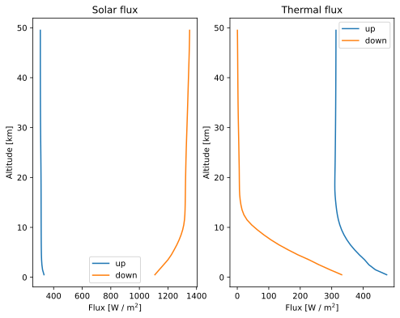

Atmospheric flux recipe
"""Atmospheric flux operator"""
import os
import matplotlib.pyplot as plt
import pyarts3 as pyarts
# Download catalogs
pyarts.data.download()
# %% Initialize the operator
fop = pyarts.recipe.AtmosphericFlux(
species=["H2O-161", "O2-66", "N2-44", "CO2-626", "O3-XFIT"],
remove_lines_percentile={"H2O": 70},
)
# %% Get the atmosphere (optional)
# The atmosphere is the full atmospheric field of ARTS as a dictionary,
# which is likely more than you wish to change. You may change only part
# of the atmosphere by simply creating a dictionary that only contains the
# fields that you want to change.
atm = fop.get_atmosphere()
# %% Get the profile flux for the given `atm`
# Passing `atm` is optional, if not passed the operator will use the current atmosphere,
# which is the atmosphere that was set with the last call to `__call__`, or the constructor
# default if no call to `__call__` has been made.
solar, thermal, altitude = fop(atm_profile=atm)
# %% Plot
fig, (ax1, ax2) = plt.subplots(1, 2, figsize=(8, 6))
ax1.plot(solar.up, altitude / 1e3)
ax1.plot(solar.down, altitude / 1e3)
ax1.legend(["up", "down"])
ax1.set_ylabel("Altitude [km]")
ax1.set_xlabel("Flux [W / m$^2$]")
ax1.set_title("Solar flux")
ax2.plot(thermal.up, altitude / 1e3)
ax2.plot(thermal.down, altitude / 1e3)
ax2.legend(["up", "down"])
ax2.set_ylabel("Altitude [km]")
ax2.set_xlabel("Flux [W / m$^2$]")
ax2.set_title("Thermal flux")
if "ARTS_HEADLESS" not in os.environ:
plt.show()
(Source code, svg, pdf)
{kind=link}
